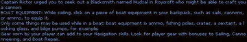
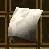
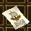
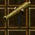

Level 40 on: the Trading Mercenary
From level 40, if you own the Tides of Fate expansion, stop leveling any other way. The Dransik Trading Mercenary hands out kill missions that pay more experience, and more experience pool, than anything else in the game. Players call them DTMs, and from 40 to the level cap they are how people level.
A mission is simple: you pick a kind of creature from his list (undead, giants, insects and so on), he names a number, you kill that many of any creature of that kind, wherever you like, and come back. Then you take another.
What you need
| Level 40 | The lowest level he deals with, since a patch of March 2024 |
| Tides of Fate | 150 tokens in the store (/store), about 7.50 US dollars. He stands on islands only this expansion lets you sail to |
| A boat | A raft is free, see below |
| Better with: Talazar's Revenge | 100 tokens. It gives you the short sea route from Valmond and the Soulstone that makes the round trip fast |
Getting there the first time
- Get the free raft. In Lotor's Summer Palace, go into the throne room building; the "Tides of Fate Raft Offer" man stands in its top right corner (792,593). There is a second one in Redwake.
- Put to sea. Click the raft in your backpack to equip it. Stand next to a dock's ship bell and the water,
click the bell, then click the water. Your character screen (
E) now shows the boat. - Sail to Roycroft. The known route starts at the west dock of Valmond: sail straight south until you are level with Roycroft, then straight west to its docks. Valmond is reached by its portal in Lotor's Summer Palace, which needs Talazar's Revenge. A raft has no guns, so steer around whatever swims.
- Click Roycroft's spawn gate, and find the Dransik Trading Mercenary in his building near the middle of town (2477,2439). The bank is next door (2460,2438), the innkeeper at 2497,2421. A second mercenary stands in Newtown (1898,1950), on its own island to the north-west.
Without Talazar's Revenge you have to sail from a dock of the old world instead. Going by the map, Josody's dock (1406,2518) lies due west of Roycroft across open sea. We have not sailed it; ask in the Help channel before you set out.
The loop
- Take a mission.
- Leave the island: a Scroll of Return or the Stone of your town takes you back to the mainland in one click.
- Kill.
- Come back and hand it in. With a Soulstone this is one click too: buy one in the mage shop of Valmond (25,000 to 30,000 gold, Talazar's Revenge), bind it to the innkeeper of Roycroft, and using it brings you there. Without one, it is the portal and the boat each time.
Choosing the mission
| Kind | From level | Kind | From level |
|---|---|---|---|
| Animals | 40 | Giants | 45 |
| Kobolds | 40 | Sea Creatures | 50 |
| Goblins | 40 | Fungoids | 50 |
| Undead | 40 | Werewolves | 60 |
| Vermin | 40 | Wyverns | 60 |
| Humanoids | 40 | Elementals | 65 |
| Insects | 40 | Demons | 75 |
| Minotaurs | 40 | Dragons | 85 |
- Not all kinds pay alike. By the patch notes, dragons, demons and elementals pay best and kobolds and goblins worst; the others were raised in 2021 and sit between.
- You can ask for a harder mission. It means many more kills and a good deal more experience. Worth it when you mean to stay out for a while.
- You can cancel at the mercenary with no penalty on the next mission, but what you killed so far is lost and pays nothing.
- Subscribers (VIP) are offered larger missions. From level 105 a mission pays half as much again.
- Each kill that counts is printed in the chat, so you see at once whether a creature is of the right kind.
What to hunt at 40 to 55
Pick the kind whose creatures you can kill fast at your level, and take along the one-off quests that want the same creatures. Creature kinds are as AE Database files them.
| Kind | Creatures of about your level | Goes with |
|---|---|---|
| Undead | Spectral Orcs (33 to 47) in Valekar's Fortress south of Dawat; Raging Spirits (38) in the Valley of the Dead east of Silvest; Mummies (44) under Jeel | "Valekar's Fortress" in Arda |
| Minotaurs | Minotaurs and Injured Minotaurs (40) around the Emporium Abbey | "Maid Nelly's Locket" and "Minotaur Ambush": the speed boots and 20 healing potions |
| Giants (from 45) | Ogres (35) at the pond by Arda; Golems (52); Ettins (54) | "Hooky" in Arda |
| Humanoids | Gluttons (32) at Glutton Lake; Talazarian Warriors (33) south of Vrethpool; Hunters (50) east of Parian | "Clear the Room" in Vrethpool |
| Insects | Wasps (32) and Wasp Warriors (47) at the hive near Hothbra; Termigon Warriors (24) in the cave by Ethera Palace | "Pegi's Picnic"; "Honey for Money" |
| Animals | Wolverines (40), Dire Wolves (50), in the snow north of Valmond | Needs Talazar's Revenge |
Three kill quests can run side by side as far as we know: the mercenary's, your town patron's, and a Lotorian Knight's (the knights stand in the halls of the large towns and give the same sort of mission). When two of them want the same creature, every kill counts twice.
What we could not find out: how many kills a mission asks for at 40, what one pays, and whether a creature far below your level still counts.
If you do not have the expansion
Then nothing changes at 40. Your patron pays well up to level 50, the Lotorian Knights have missions at any level, and the Highlands have quests into the 50s. The game is free up to level 100.
The expansions: what each one opens
The base game costs nothing and, by the game's own help, is free to play through level 100. Four expansions are
sold in the in-game store (/store, or F11) for tokens, which are bought through Steam at 5 US cents each.
A new account has to wait a week before it can buy tokens. Prices are the wiki's and may have changed.
| Expansion | Tokens | What it opens | Worth it for a beginner |
|---|---|---|---|
| Tides of Fate | 150 | The sea, boats, the islands of Roycroft, Newtown and New Royale, the Trading Mercenary. Level cap 110. Feats from level 100 | Yes, at 40, for the mercenary |
| Talazar's Revenge | 100 | The snow lands north of Valmond. Soulstones. Jewelry Making and the salvage skills. Level cap 105. The Chaos Knights. Six advanced combat skills | At 40 with Tides of Fate, for the Soulstone and the short way to Roycroft. Its own land is for level 60 and up |
| Sands of Creation | 100 | The deserts of Khafra and Rahura. Runecrafting, which makes totems. Level cap 108 | Not before 70, except a handful of early quests around Khafra |
| Construction | 100 | Building a house or a guild hall. Needs Sands of Creation, and a subscription to keep the house | No |
| All four together | 400 | Cheaper than the four bought singly (450) |
A subscription (VIP) is separate: 120 tokens for a month, 345 for three, 660 for six. It gives 10% more experience, four more places in the backpack, a shared bank between your characters, automatic looting when alone, larger mercenary missions and a stone that returns you to Lotor's Summer Palace.
Tides of Fate: boats



The boat's own equipment screenWiki

The Patchwork SailWiki

A boat is a deed in your backpackWiki

A Swivel GunWiki| What | How |
|---|---|
| A raft | Free, from the "Tides of Fate Raft Offer" man in the throne room building of Lotor's Summer Palace (792,593) |
| A sail | "Nautical Knowhow": Captain Rictor at the west dock of Valmond sends you to Quartermaster Loyric at the southern dock of Roycroft and back. Gives a Patchwork Sail, and a large reward of experience pool. Needs Talazar's Revenge as well. Without a sail a boat is painfully slow |
| A real ship, free | "Half Empty or Half Full?": the Warehouse Foreman in the north of Roycroft. Under the town: 20 barrels with Drunken Dwarves (level 16) and 50 Sewer Rats (23); north of town 100 Goblin Pirates (25) and the boss Goba Longblade (30, 1,800 health). Gives a Junk |
| A real ship, bought | A Junk costs 250,000 gold from Larson Davide, who stands beside the raft man, or at any shipyard |
| Guns | "Steel and Salt": Ovathan Hudsal, the smith in the north-west of Roycroft. Skeleton Pirates (48) on New Royale. Gives a Swivel Gun and shot. Choose the answer about making the seas safer |
| Repair kits | "Business is Booming": Idasha Motopolis in Roycroft's carpentry shop, after Steel and Salt |
How the sea works, in short:
- Launching: equip the boat, stand by a dock's bell and the water, click the bell, then the water.
- Three skills belong to it: Sailing (speed and the boat's health), Cannoneering (hitting) and Boat Repair. None of them can be fed from the experience pool. At sea they matter more than your character's level.
- Fighting works like archery: enter attack mode (
Q), click the creature, and every gun fires. - Dying at sea damages the boat, not your gear, and you wake at your spawn gate as on land.
- Buoys and floating wreckage give Sailing experience for a click. Click every one you pass.
Roycroft also has three of the best rewards a character below 50 can get, all with no requirement to wear them: "Strange Behavior" (Crocker, in the basement of the guard house: Jenkin's Boots, +8 Str +8 Dex +5 Int +5 Con +25 health, for Goblin Pirates of level 25), "Fool's Errand" (Wesley, in the Salty Dog tavern: Eva's Necklace, +8 Con +40 health, for a delivery to Autumn and Whisperdale) and the Junk above.
With a friend, you can tackle those goblins around level 20 and get Jenkin's Boots early.
Talazar's Revenge: the north
- Getting there: the Valmond portal in Lotor's Summer Palace.
- The Soulstone: sold in the mage shop of Valmond. Bind it to any innkeeper in the world; using it brings you back to that inn. It is the most useful travel item in the game.
- "Proof of Loyalty": Councilor Draneth, in the Council Hall in the south of Valmond. 100 Talazarian Reavers (level 55) and 100 Shadow Priests (52). It opens the door of Farstead Keep, behind which lies the rest of the north, and gives the Alliance Insignia (a ring, +4 to all four, +25 health, level 40). A job for 45 to 50.
- Early rewards in Valmond and Teylan that need little fighting: the Blessed Amulet of Isos ("Misplaced", +8 Con, level 30), the Ring of Health ("Strange Plants", +35 health, level 40, needs Foraging 45), a Casting Pole ("Oyster Chowder").
- Advanced combat skills: Block, Dodge, Critical Hit, Double Attack, Critical Blast, Critical Heal. Each is taught in towns of the north for 250,000 gold.
- Chaos Knights in Valmond, Hammerfist, Duremar and Meroven give repeatable kill missions, like the Lotorian Knights of the south.
- The Power Hour altar stands in Teylan.
Sands of Creation: the desert
- Getting there: the Khafra or Rahura portal in Lotor's Summer Palace. Rahura is a town of the other side: its guards attack characters of good standing.
- A few early quests around Khafra: "Snakes" (Hafsah, near the bank: 50 Battle Horned Vipers of level 15 for the Palm Woven Gloves, +4 to all four, level 15), "A Man of Little Time" (a delivery), "Ravenous Swarm" (100 Desert Scarabs of level 35 for 5,000 gold), and the first half of "Lost" (River Caimans of level 25 and a trapped crypt, for the Tears of Baniti, +8 Int +6 Con, no requirement).
- Runecrafting makes totems, among them the Totems of the Warrior, the Archer and the Mage.
- Everything else here is for level 70 and far beyond: this is where the dragons are.